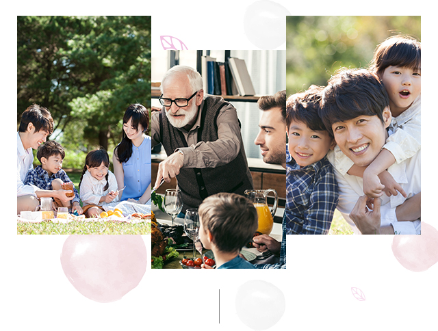

와 제 롤모델이 잡스에요!!! 아이폰 첫 출시되고 나서부터 계속 아이폰 쓰고 있는데 잡스가 너무 그리워요ㅠㅠ 지금은 돈만 벌려고 하는 것 같아서 디자인 발전도 없고ㅠㅠ와 제 롤모델이 잡스에요!!! 아이폰 첫 출시되고 나서부터 계속 아이폰 쓰고 있는데 잡스가 너무 그리워요ㅠㅠ 지금은 돈만 벌려고 하는 것 같아서 디자인 발전도 없고ㅠㅠ와 제 롤모델이 잡스에요!!! 아이폰 첫 출시되고 나서부터 계속 아이폰 쓰고 있는데 잡스가 너무 그리워요ㅠㅠ 지금은 돈만 벌려고 하는 것 같아서 디자인 발전도 없고ㅠㅠ와 제 롤모델이 잡스에요!!! 아이폰 첫 출시되고 나서부터 계속 아이폰 쓰고 있는데 잡스가 너무 그리워요ㅠㅠ 지금은 돈만 벌려고 하는 것 같아서 디자인 발전도 없고ㅠㅠ와 제 롤모델이 잡스에요!!! 아이폰 첫 출시되고 나서부터 계속 아이폰 쓰고 있는데 잡스가 너무 그리워요ㅠㅠ 지금은 돈만 벌려고 하는 것 같아서 디자인 발전도 없고ㅠㅠ
Cultural Odyssey
Why May Is the Month for
Family-themed Festivities in Korea

By Tim Alper(Journalist)


If you visit Korea in May, you are guaranteed two things: fantastic early summer weather and the sight of people everywhere carrying bunches of flowers.
Indeed, May is the month of Korean family and social celebrations. Europeans celebrate Father’s Day and Mothering Sunday in June and March (with Americans celebrating Mother’s Day in May), while World Teachers’ Day is held in October. But in Korea, May hosts a trio of celebrations – with Children’s Day coming first on May 5, closely followed by Parents’ Day (May 8) and Teacher’s Day completing the set on May 15.
Celebrating Childhood
Children-specific festivities are rare in the West. But in Korea, this event is cause for major celebration. It originated in May 19 23, when children’s writer Bang Jeong-hwan published an essay entitled An Open Letter to Adults. Bang advised Korean adults to “speak to children with respect, and speak softly,” and referred to children as the “future of our nation.” As the coun- try was, at that time, under Japanese colonial rule, the letter struck a chord with many Koreans, who dreamed of a future where their children would live free from the yoke of imperialism.
Since the 1920s, the holiday has evolved, and once Korea gained its independence, the day was declared a public holiday. If it falls on a weekday, Children’s Day sees banks, offices and other businesses close for the day – setting it apart from the other two May holidays.
As it is a fairly modern celebration, Children’s Day does not involve much ritual, tradition or ceremony. Instead, parents are encouraged to spend the day with their offspring, taking them outside to enjoy the fine weather, or spending the day playing games together. As you might expect, zoos, amusement parks and cinemas are packed to the rafters every May 5, with many even offering free admission to youngsters.
Mothers and Fathers
Following Children’s Day is Parents’ Day – a time for children to repay their parents for their kindness and care. Young children are expected to make symbolic gestures, like bringing hand-made greetings cards home from school. Grownups, meanwhile, are expected to treat their often-elderly parents to far more lavish gifts, taking them out for sumptuous meals at restaurants.
Flowers play a key role on this day, more so than perhaps any other in Korea. Children traditionally pin red carnations to their parents’ lapels as an outward symbol of their affection, although many prefer to present their mothers and fathers with bunches of freshly picked blooms.
The holiday was introduced by Korea’s first president, Syngman Rhee, who wanted to introduce the American holiday of Mother’s Day (along with its similar carnation-giving traditions). However, fathers also demanded a little recognition.So, in the 1970s, the government decided to grant it to them, designating May 8 as a more inclusive “Parents’ Day.”
Educators Matter Too!
Completing what is known in Korea as “Family Month” is Teachers’ Day. Again, flowers are a popular gift (especially carnations), and children often arrive at school on May 15 with hand-written cards, containing messages of appreciation.
Educators have been highly honored in Korea since ancient times, and calling someone a “teacher,” no matter what they actually do for a living, is a mark of respect. Even former students, many of them fully grown, often return to their old schools on this day to greet to the teachers who once inspired them.
For Koreans of all ages, May is a time to thank children for their exuberant vitality – and a time to show gratitude to the people who helped youths along their path to adulthood.


By Tim Alper(Journalist)
Tim Alper is a British journalist who has lived in Seoul for 11 years. He has contributed to publications such as The Guardian, The Jewish Chronicle, Joongang Ilbo, Weekly Chosun and Korean Air’s Morning Calm. He is also the author of the book Bananas & Couscous and the co-author of Have Fork, Will Travel.
-
Great
322
-
Like
322
-
Sad
322
-
So-so
322
-
Angry
322